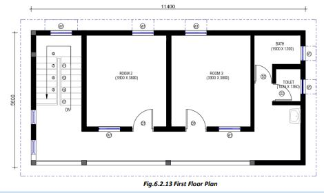
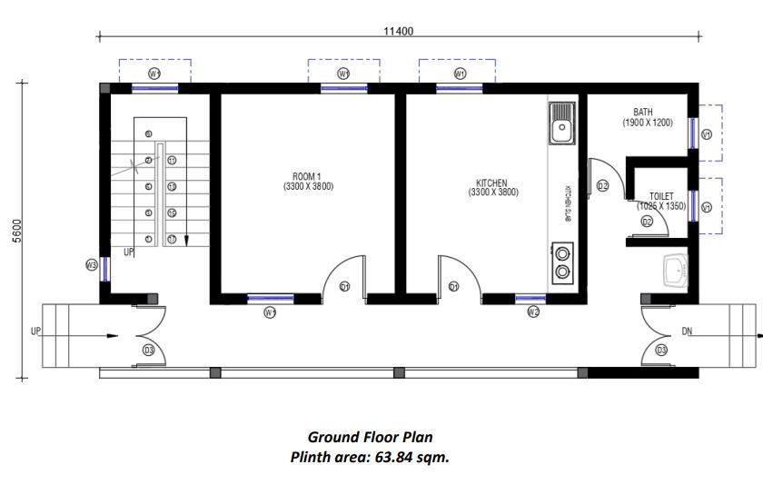
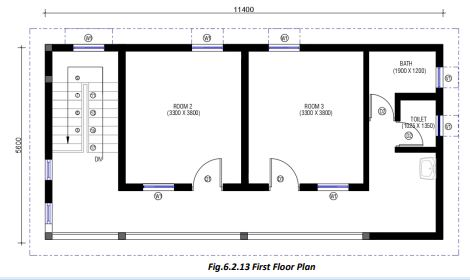
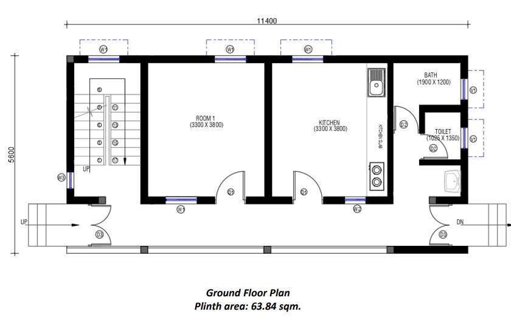

Building Layout
● Formulate a house plan according to your needs.
● See that the selected house plan fits well over your plot.
● Figure out the plinth area of your formulated plan. Find out the Plinth area rate of house construction in your area. Multiply the plinth area with local plinth area rate to find an estimated cost of construction of the Plan. See that the selected plan size fits in your budget.
● Our house site is long. (Ch-3 Site Selection and Assessment)
● So, we select a longish Plan of two rooms, covered veranda, cooking space, bathroom, WC and a washing space on the ground floor and two more rooms on the first floor.
● You can formulate any Plan as per your budget, family requirement, and shape and size of your construction site.
● Prepare the site for construction following tips and steps given in the book. (Ch-4 Site Preparation)
 


